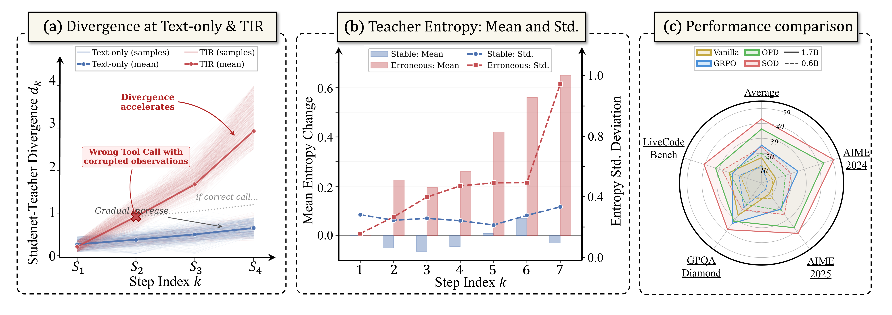
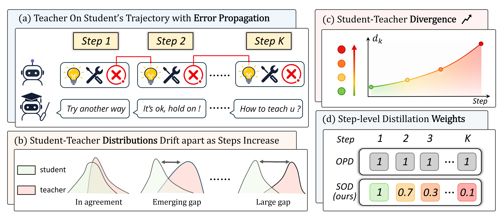
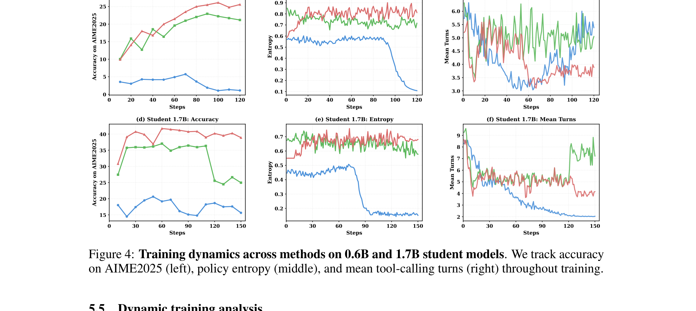
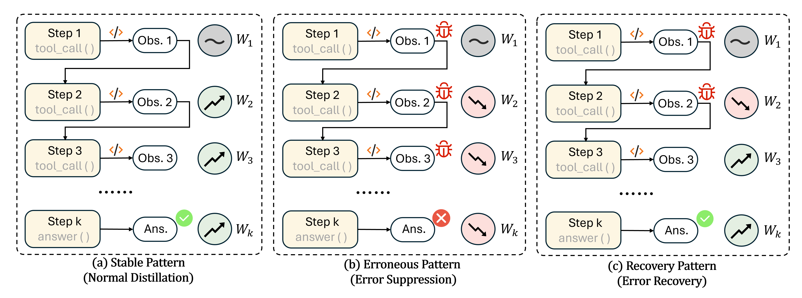
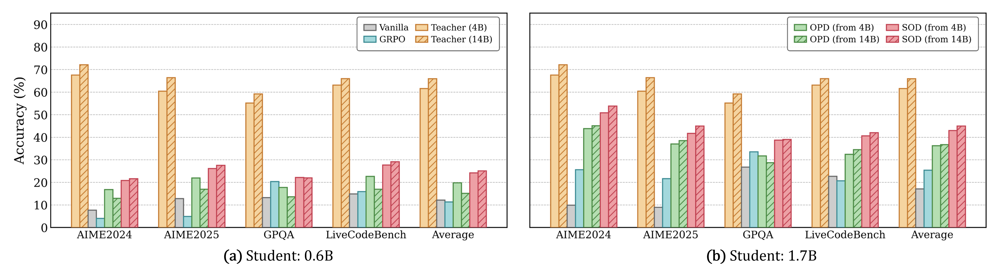

SOD：面向小模型 agent 的 step-wise on-policy distillation
SOD: Step-wise On-policy Distillation for Small Language Model Agents
①开源贡献 Open-source Artifacts
本文开源程度较高且经核实可下载：代码以 Apache-2.0 协议放在 GitHub（含 cold-start SFT + SOD 训练 pipeline + 评测脚本，基于 VeRL 与 Open-AgentRL 框架），三个模型权重（0.6B / 1.7B student 与 4B teacher）已上传 HuggingFace 并有真实下载量，训练/评测数据集复用上游 Gen-Verse 的 Open-AgentRL 系列（SFT-3K、RL-30K、Eval），均可在 HuggingFace 直接 load。下表链接均于解读日核实存在。
| 类型 | 是否开源 | 内容 / 链接 |
|---|---|---|
| 代码 Code | ✔ | github.com/YoungZ365/SOD — Apache-2.0；PyTorch 实现，含 SFT 冷启动、SOD 训练 pipeline、SandboxFusion 代码沙箱配置、W&B 监控；评测覆盖 AIME 2024/2025、GPQA-Diamond、LiveCodeBench-v6，指标 average@32 / pass@32 / maj@32。 |
| 模型权重 Weights | ✔ | HF collection youngzhong/sod：SOD-0.6B、SOD-1.7B（两个 student）、SOD-GRPO_teacher-4B（teacher）。均基于 Qwen3 系列。 |
| 数据集 Dataset | ✔ | Open-AgentRL-SFT-3K（3k 多轮 SFT 轨迹）、Open-AgentRL-30K（30,128 条 RL 数据，183MB parquet）、Open-AgentRL-Eval（评测集）。注：这套数据沿用上游 Yu et al.（Open-AgentRL，arXiv 2510.11701）的开源数据。 |
| 环境 / Benchmark | ✔ | 评测环境与 harness 随代码一并开源；TIR 用 Python code interpreter（SandboxFusion）。Benchmark 本身（AIME、GPQA-Diamond、LiveCodeBench）为社区公开数据。 |
| 项目主页 / Demo | ✘ | 未见独立项目主页或在线 demo；README 即文档入口（含 Framework / Main Results / Get Started / Model Zoo / Citation 等章节）。 |
②研究动机与贡献 Motivation & Contribution
背景与问题
把 agent 能力下放到可端侧部署的 small language model（SLM）有很现实的价值（低延迟、低成本、隐私友好），但让 SLM 稳定、有效地做 tool-integrated reasoning（TIR） —— 即在多轮里穿插自然语言推理、tool 调用与拿到 observation 后继续推理 —— 一直很难。现有 post-training 路线主要有两条，各自有明确的痛点：
- RL（尤其 GRPO）：TIR 任务轨迹长、决策多步、还要和外部 tool 交互，但 RL 只给稀疏的 outcome-level reward（整条轨迹一个分）。对容量有限、探索能力弱的小模型，稀疏监督会进一步放大 exploration failure，把 policy 卡在几乎没有有效推理信号的 cold-start 区。
- On-policy distillation（OPD）：近来很火。它在 student 自己采样 的轨迹上，由 teacher 提供稠密的 token-level 监督（本质是 student 访问状态上的 reverse-KL），缓解了稀疏 reward 的 credit assignment 难题、提升了样本效率与训练稳定性。但它默认 teacher 监督在 student 访问到的所有状态上都可靠。
本文的实验发现：把 OPD 直接搬到 SLM 的 TIR 上会出现一种 TIR 特有的失效级联。关键在于 TIR 与纯文本推理的状态漂移方式根本不同 —— 纯文本里 student 即便偏离 teacher，状态也是沿生成的 context 连续演化、分布漂移是渐进的；而 TIR 通过 tool observation 引入不连续的状态跳变：一次错误 tool call 会把一段不是任一模型生成的、可能很长的"脏" observation 直接拼进 context，让后续推理从一个被污染的状态展开。小模型 tool 使用本就更弱，早期训练会接连犯错，状态分布迅速漂出 teacher 分布。在这种 OOD 状态下，teacher 的 token-level 监督变得不可靠甚至误导，被放大的 student–teacher 差异会带来高方差、无信息的梯度，进而训练崩溃。

本文的切入点
核心观察是：teacher 监督的可靠性不是全局恒定的，而是随 step 变化的，且这种可靠性可以被低成本地度量出来。当 student 仍与 teacher 对齐时（divergence 小），应当保留满强度的稠密监督以充分吸收 teacher 指导；当偏离很大（多半因为 tool 引起的状态漂移）时，应当把对应 step 的 distillation 信号衰减下去，以免被误导。作者把"student 在第 $k$ 步上与 teacher 的差异"提炼成一个 step-level divergence 分数，并据此对每个 step 的 distillation 强度做自适应重加权 —— 这就是 SOD（Step-wise On-policy Distillation）。论文还从理论上刻画了这套失效机制并证明重加权能恢复梯度信噪比。
核心贡献
- 诊断出 TIR 下 OPD 的失效级联，并给出理论刻画。用两个命题说明：(Prop.1) tool observation 带来不连续漂移，单次错误就使 step 间 divergence 跳升 $\Omega(m\cdot\eta_{\text{tool}})$（远大于纯文本的 $O(\eta)$），连续 $j$ 次错误更是超线性复合；(Prop.2) 当 student 漂到 teacher 低支撑区（overlap $\rho_t\to0$）时，OPD loss 的二阶矩被 $\log^2(1/\epsilon)$ 量级的项支配，梯度信噪比 $\mathrm{SNR}(g_t)\to0$。
- 提出 SOD：基于 step-level divergence 的自适应重加权。用一个能从 OPD 前向"顺手"算出、零额外前向开销的分数 $d_k$（只需 student 采样 token 上的 teacher log-prob）作为可靠性代理，按相邻 step 的 divergence 比值缩放 distillation 强度，对齐时保权重、漂移时衰减、恢复时回升（上界 $1+\delta$ 防止过度放大）。并证明（Prop.3）该机制把高 divergence step 的二阶矩抑制 $O((d_1/d_k)^2)$，恢复有界 SNR。
- 大量实验验证有效且通用。在 AIME 2024/2025、GPQA-Diamond、LiveCodeBench 四个高难 benchmark、0.6B 与 1.7B 两个 student 上，SOD 全面超过 6 个 baseline，相对次优 baseline（OPD）平均提升 20.86%（0.6B）/ 18.50%（1.7B）；0.6B student 在 AIME 2025 达 26.13% average@32（作者称是首个达到该水平的 sub-billion 参数模型）；训练更稳、tool-call 轮数更少、且相对 OPD 几乎零额外开销（0.6B 上甚至更快）。
③方法 Method
先看整体。SOD 仍然是"student 自己 rollout、teacher 给稠密 token-level 监督"的 OPD 框架，并叠加 GRPO 的 outcome-level reward 来做轨迹级探索；它唯一新增的东西，是按 step 给 distillation loss 乘上一个自适应可靠性权重 $w_k$。下图把直觉讲得很清楚：(a) student 多步轨迹里的错误 tool call 会沿 step 传播、(b) student 与 teacher 分布随 step 越拉越开，(c) 用 step-level divergence $d_k$ 刻画这种漂移，(d) 于是 SOD 把高 divergence step 的权重压低（如 $1, 0.7, 0.3, \dots, 0.1$），而原始 OPD 对所有 step 一视同仁（全 $1$）。

预备：TIR、GRPO 与 OPD
一条 TIR 轨迹记作 $\tau=(x,y_1,o_1,\dots,y_K,o_K,y_{K+1})$，其中 $x$ 是输入，$y_k$ 是模型在第 $k$ 步生成的 response（可能含推理、tool 调用或最终答案），$o_k$ 是环境返回的 observation，$y_{K+1}$ 是最终回答。关键点：policy $\pi_\theta$ 只生成模型 token，observation $\{o_k\}$ 是外部环境给的，不由任何模型生成。
GRPO 提供稀疏的 outcome-level reward。对每个 $x$ 从旧 policy 采样一组 $G$ 条轨迹，各得 reward $r_i=r(\tau_i)$，用组内归一化得到 advantage：
$$\hat{A}_i = \frac{r_i - \text{mean}(\{r_j\})}{\text{std}(\{r_j\}) + \epsilon_A},$$再用带 clip 的 surrogate 目标 $\mathcal{L}_{\text{GRPO}}$ 优化（$\rho_{i,t}(\theta)$ 为 token 级 importance ratio）。它只给轨迹级信号，缺少细粒度 token 监督。
OPD 则在 student 采样轨迹 $y\sim\pi_\theta$ 上，对所有模型生成 token 位置 $\mathcal{T}_i$ 做：
$$\mathcal{L}_{\text{OPD}} = \mathbb{E}\!\left[\sum_{t\in\mathcal{T}_i}\big(\log\pi_\theta(y_t\mid y_{为什么 OPD 在 TIR 下会崩：两个命题
定义第 $k$ 步的 step-level mismatch（$\mathcal{I}_k$ 是第 $k$ 步模型生成 token 的位置集合，排除 observation token）：
$$\Delta_k = \frac{1}{|\mathcal{I}_k|}\sum_{t\in\mathcal{I}_k} D_{\mathrm{KL}}\!\big(\pi_\theta(\cdot\mid y_{两者合起来：连续错误 tool call → divergence 超线性放大（Prop.1）→ 把 student 推进低 overlap 区 → OPD 梯度被高方差项主导（Prop.2）。而 OPD 对所有 step 均匀求和，会系统性地高估这些被污染 step 的权重。这就是为什么需要按 step 重加权。
SOD 的核心：step-level divergence 与自适应重加权
把轨迹切成 $K+1$ 个推理 step（每个 step = 两次 tool observation 之间、或最终答案的那段模型 response）。定义可在 OPD 前向里零成本得到的 step-level divergence 分数（只用 student 采样 token $y_t$ 上的 log-prob 差，不需要遍历整个词表，也不含 observation token）：
$$d_k = \frac{1}{|\mathcal{I}_k|}\sum_{t\in\mathcal{I}_k}\big|\log\pi_\theta(y_t\mid y_{其中 $\epsilon$ 是数值稳定的小常数，$\delta$ 控制 distillation 放大的上界。注意这个连乘是相邻 step divergence 的比值，只依赖相对趋势而非绝对值，所以 $\Delta_k$ 的任意单调代理都可用 —— 论文在附录 D.5 证明 $d_k$ 与 $\Delta_k$ 单调一致（由 Jensen 不等式，$d_k$ 是单样本 MC 估计的下界且随 $\Delta_k$ 增大），因此实现中直接用 $d_k$ 代替 $\Delta_k$，零边际成本。其行为：
- divergence 上升（$d_{u+1}>d_u$，正在漂离 teacher）：比值 < 1，权重连乘后变小，衰减高 mismatch 区的监督。
- 从早期错误中恢复（$d_{u+1}
- 上界 $1+\delta$：保证恢复时不过度放大任一 step，维持优化稳定。
训练目标
单 token 的 OPD 项 $\ell_{\text{OPD}}(y_t)=\log\pi_\theta(y_t\mid y_{
其中 $\mathcal{L}_{\text{GRPO}}$ 提供稀疏 outcome reward 驱动轨迹探索，$\mathcal{L}_{\text{OPD}}^{\text{step}}$ 提供被 divergence 重加权过的稠密 token 监督，二者共同在 tool 引起的状态漂移下实现稳定学习。论文也证明（Prop.3）在 divergence 单调上升时，第 $k$ 步加权二阶矩 $\mathbb{E}[w_k^2\ell_t^2]\le\frac{(d_1+\epsilon)^2}{(d_k+\epsilon)^2}\mathbb{E}[\ell_t^2]$：分子由首步 divergence 决定、有界，分母随累积漂移增大，于是自动抑制方差、恢复正的梯度 SNR；恢复段则靠 $1+\delta$ 上界 + 该段 $\mathbb{E}[\ell_t^2]$ 本身下降来保证稳定。
- 三阶段算法（Algorithm 1）：① on-policy rollout —— student 与 tool 环境交互采 $G$ 条轨迹、算 $r_i$ 与组内 advantage；② 算 step-level divergence 与权重 —— 切 step、按 Eq.(6) 算 $d_k$、置 $w_1=1$、按 Eq.(7) 算 $w_{k\ge2}$；③ 联合优化 —— 合并 $\mathcal{L}_{\text{GRPO}}+\mathcal{L}_{\text{OPD}}^{\text{step}}$ 更新并同步旧 policy。
- SOD 仅新增两个超参：数值稳定常数 $\epsilon=10^{-6}$、上界偏移 $\delta=0.2$（即 $w_k\le1.2$）；其余训练配置与 baseline 完全一致以隔离效果。
- 训练栈：VeRL + Open-AgentRL；rollout 用 vLLM 异步、tensor parallelism=4；多轮 agent 交互最多 16 个 tool-call turn；AdamW，lr=1e-6，train batch 64 / mini-batch 16，最多 1 epoch；max prompt 2,560 token、max response 20,480 token；训练时每 prompt 采 16 条、验证 32 条。teacher 是 Qwen3-4B 再用 GRPO 在 RL 集上优化过的版本。硬件：单节点 8×H20(96GB)，0.6B/1.7B 约 2–3 天。
- 开销可忽略：$d_k$、$w_k$ 全部来自 OPD 前向已有的 log-prob，额外只是逐 step 平均 + $O(K)$ 次标量乘（$K\approx3\text{–}7$），不需要额外前向，peak memory 几乎不变（<0.5GB 差异）。0.6B 上 SOD 反而比 OPD 每 step 快 3.5%（因为衰减了错误 tool-call 模式、rollout 更短更高效）；1.7B 上仅 +4.9% 开销。
④实验评估 Evaluation
评测设置
- Benchmark / 数据集： AIME 2024 / 2025（美国数学邀请赛，各 30 题、答案为 $[0,999]$ 整数可精确匹配，考多步推理与创造性解题；用近年题以降低数据污染）； GPQA-Diamond（198 题"Google-proof"研究生级理科多选，需真实领域专业 + 多步科学推理，专家约 65%、非专家约 34%）； LiveCodeBench（持续更新、抗污染的代码 benchmark，用 v6 版 1,055 题，覆盖代码生成、自修复、执行预测等）。
- 训练数据：沿用 Yu et al.；3k 高质量 SFT 语料（s1-1k + 各 1k 的 LeetCode/ReTool，后两者经 ReasonFlux-PRM 打分留 top）；30k 多样 RL 数据（DAPO-Math 17k + Skywork-or1 数学 4,902/代码 3,586 + MegaScience 科学 3k）。
- 对比基线（6 个）：Vanilla（base 模型零样本）、SFT（离线模仿）、GRPO（纯 RL）、OPD（on-policy distillation，本文采 $\mathcal{L}_{\text{GRPO}}+\mathcal{L}_{\text{OPD}}$ 的联合版作主基线，是次优）、OPSDgt（self-distillation，teacher 额外看 ground-truth 解）、OPSDhint（self-distillation，看从 ground-truth 蒸出的 hint）。
- 评价指标 Metric：每题独立采 32 个样本算 average@32（准确率百分比，越高越好），温度 1.0、top_p=0.6，5 次独立运行取均值±标准差。teacher 用 Qwen3-4B（+GRPO），student 用 Qwen3-0.6B 与 Qwen3-1.7B。
主要结果
下表为原文 Table 1 的核心数字（average@32，%）。本文方法 SOD 加粗；可见在两个 student 规模、四个 benchmark 上 SOD 全部第一。
| Student | 方法 | AIME 2024 | AIME 2025 | GPQA | LiveCodeBench | Average |
|---|---|---|---|---|---|---|
| 4B teacher | GRPO（teacher 上界） | 67.60 | 60.42 | 55.19 | 63.13 | 61.59 |
| 0.6B | Vanilla | 7.71 | 12.81 | 13.24 | 14.89 | 12.16 |
| SFT | 5.67 | 5.42 | 15.20 | 9.61 | 8.97 | |
| GRPO | 4.06 | 4.90 | 17.76 | 15.95 | 11.32 | |
| OPD（次优） | 16.82 | 22.95 | 17.76 | 22.65 | 20.04 | |
| OPSDgt | 12.63 | 17.04 | 17.32 | 16.73 | 15.93 | |
| OPSDhint | 9.77 | 14.12 | 15.98 | 12.65 | 13.13 | |
| SOD | 20.84 | 26.13 | 22.19 | 27.72 | 24.22 | |
| 1.7B | Vanilla | 9.90 | 8.96 | 26.80 | 22.73 | 17.10 |
| SFT | 26.77 | 22.40 | 29.85 | 24.63 | 25.91 | |
| GRPO | 25.63 | 21.67 | 33.55 | 20.70 | 25.39 | |
| OPD（次优） | 43.86 | 37.04 | 31.73 | 32.45 | 36.27 | |
| OPSDgt | 33.85 | 24.69 | 35.02 | 22.73 | 29.07 | |
| OPSDhint | 34.42 | 21.43 | 33.46 | 23.12 | 28.11 | |
| SOD | 50.83 | 41.72 | 38.72 | 40.63 | 42.98 |
怎么读这些数字：
- 全面领先。SOD 在每个 benchmark 都最高，相对次优的 OPD 平均提升 20.86%（0.6B：20.04→24.22）/ 18.50%（1.7B：36.27→42.98）。特别地，0.6B SOD 在 AIME 2025 拿到 26.13%，作者称是首个达到该水平的 sub-billion 模型。
- 小模型下稀疏监督/静态示范不够。在 0.6B 上 SFT(8.97) 和 GRPO(11.32) 甚至打不过 Vanilla(12.16) —— 印证了"小模型 + 稀疏 outcome reward / 离线模仿"在 TIR 上无力，而稠密但被可靠性调制的监督才管用。
- 能跨规模、且部分弥补容量差距。1.7B SOD 恢复了 teacher 性能的 69.8%（OPD 仅 58.9%）；连 0.6B SOD 都超过了若干 1.7B baseline，说明 step-wise 重加权能部分补偿模型容量差。

消融 / 分析
(A) 组件消融（Table 2，1.7B，average）。从两个维度拆 6 个变体：
| 变体 | Average | 说明 |
|---|---|---|
| (1.1) Uniform Weighting（$w_k\equiv1$） | 34.70 | 退化为均匀加权 → 所有 step 同等暴露于被污染监督，明显掉点 |
| (1.2) Heuristic Weighting（固定指数衰减 $\gamma^{k-k_{\text{err}}}$, $\gamma=0.9$） | 37.14 | 固定衰减抓不住非单调 divergence、无法捕捉"恢复"，仍落后 |
| (1.3) Mask After Wrong（首次错误后全部置零） | 31.85 | 最差 —— 丢掉一次错误后的全部信息，浪费了部分正确轨迹、也阻断恢复 |
| (1.4) w/o Weight Clipping（去掉 $1+\delta$ 上界） | 38.10 | 无界放大引入训练不稳 |
| (2.1) w/o GRPO | 40.78 | 去掉 outcome reward → 失去轨迹级探索，掉 2.20 |
| (2.2) w/o Step-wise OPD | 25.39 | 去掉稠密蒸馏 → 仅稀疏 reward，暴跌，证明稀疏信号不足以稳定小模型 TIR |
| SOD（完整） | 42.98 | — |
结论：自适应 step-wise 重加权是关键，静态/启发式替代都不行（Obs.3）；GRPO 与 step-wise OPD 互补且都不可或缺，但二者非对称 —— step-wise OPD 提供主要的细粒度指导（去掉它暴跌到 25.39），GRPO 在 teacher 分布之外拓展轨迹探索（Obs.4）。更尖锐的对照在附录 Table 5：naive OPD(33.79) vs. SOD w/o GRPO(40.78) = +6.99（+20.69%），完全不靠任何 RL reward，说明 SOD 的核心收益来自重加权机制本身，GRPO 只是锦上添花(+2.20)。

(B) 可扩展性（Figure 3 + Obs.5）。换更强的 14B teacher 蒸馏 0.6B/1.7B：OPD 反而退化（0.6B 上从 4B 换到 14B teacher 平均掉点）—— 更大的 student-teacher 容量差放大了分布 mismatch，均匀蒸馏把越来越不可靠的监督一路传播；而 SOD 一致受益于更强 teacher，说明 step-wise 重加权能吸收更强 teacher 的知识、同时压住容量差带来的有害信号。

(C) distillation pattern 随训练演化（Figure 6 + Obs：训练分析）。把每条轨迹按 $w_k$ 序列形状分为 Stable / Recovery / Erroneous 三类并统计占比：随训练推进，Stable 占比稳步上升、Erroneous 持续下降、Recovery 先升后稳 —— 说明 student 逐渐学会"遇到难 step 不再连环犯错，而是恢复或干脆避错"；且对 0.6B（初期 Erroneous 比例高、恢复能力弱）这种"保护性抑制错误信号"在早期尤为关键。配合 Figure 4：SOD 全程稳定上升不退化，而 OPD 在 1.7B 上早熟后回落、GRPO 直接 entropy collapse。附录 case study 还给出具体轨迹的 $d_k/w_k/\bar H_k$ 数值（如稳定轨迹 $w_k$ 稳定贴着上界 1.2，teacher 条件熵 $\bar H_k$ 全程低；出错轨迹 teacher 熵从 0.85 飙到 2.14、末步 78% token 熵 >1.0），直观印证"teacher 在被污染状态下确实不可信"。
⑤洞见 Insights
- "teacher 监督全程可靠"这个 OPD 默认假设，在 agentic/TIR 场景下是错的。tool observation 带来的是不连续状态跳变（而非纯文本那种渐进漂移），一次错误就可能把 student 推到 teacher 从未见过的 OOD 状态，此处 teacher 的高熵"指导"其实是噪声。把监督强度按状态可靠性在 step 级动态调制，是比"全局信任 teacher"更本质的设计原则 —— 作者明确把它提为 agentic 系统鲁棒训练的一般原则。
- 可靠性可以零成本地度量。不需要额外前向或遍历词表，仅用 OPD 前向已有的、student 采样 token 上的 teacher log-prob 差 $d_k$ 就能作为 $\Delta_k$ 的单调代理；而且只用相邻 step 的比值而非绝对值，对度量的任意单调变换都鲁棒。这让"自适应重加权"几乎免费。
- "允许先错后恢复"比"一错就放弃"更好。硬 mask（错误后全置零，31.85）是所有变体里最差的，因为它丢掉了部分正确轨迹的信息、也阻断了 student 自我纠正；SOD 用比值连乘 + 上界让权重能在 student 回到 teacher 支撑区时回升，把"暂时偏离"和"持续偏离"区别对待，这正是它涨点的核心来源（去掉 GRPO 仍 +20.69% over naive OPD）。
局限与未来
作者自陈两点：(1) 只在带 Python code interpreter 的 agentic TIR 上验证 —— 这是一个干净可复现、能隔离 tool 引起状态漂移的环境；web browsing、API 调用等其它 agentic 场景可能有不同漂移模式，值得探索。(2) 全部实验用 Qwen3 家族（因其跨规模稳定、多尺寸开源、被近期 OPD 研究广泛采用，便于公平对比），换其它模型家族的验证因资源所限留给未来。我的补充判断：(a) 权重只依赖相邻 step divergence 比值，对"渐进式整体漂移但每步都不剧烈"的长程任务是否仍灵敏，值得观察；(b) $d_k$ 是单样本 MC 估计，理论上是 $\Delta_k$ 的下界，在极端长轨迹或高方差 step 上代理质量如何，论文未给经验误差;(c) 方法对 teacher 选择有依赖（teacher 自身在被污染 context 上也会失准，见 Figure 1b / case study），若 teacher 与 student 推理范式差异更大，重加权能否依旧奏效尚待检验。
与相关工作的关系
（基于本文自身论述）相对 RL for agents（RLHF→PPO→GRPO，及 ReAct/Toolformer/FireAct 等结构化推理）：本文指出纯 RL 在 SLM-TIR 上受稀疏 outcome reward + compounding error 之苦，故引入稠密蒸馏。相对 OPD 一脉（Agarwal et al. 把 on/off-policy distillation 统一到 divergence；Gu et al. MiniLLM 把 OPD 形式化为 reverse-KL；以及把 OPD 解释为带隐式 per-token reward 的 KL 正则 RL、或分析其依赖 teacher-student 推理范式兼容性的工作）：本文是首批专门针对 TIR 下 OPD 失效、并给出 step-level 重加权解法的工作之一，与同期"用 OPD 缓解 RL 局限"的若干工作并行但聚焦点不同 —— 它强调的是监督可靠性随状态漂移而变这一 agentic 特性，而非纯文本设定下的 divergence objective 选择。与 OPSD（self-distillation，teacher 看 ground-truth/hint）相比，SOD 用的是真正更强的外部 teacher + 可靠性调制，实验上也更优。